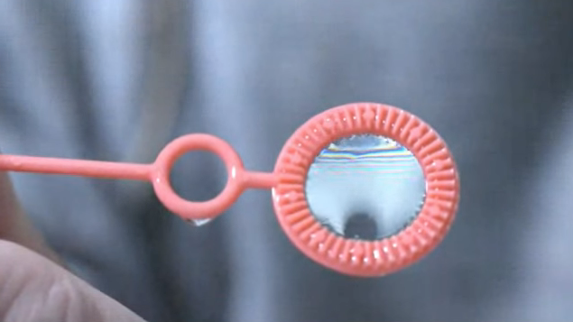

The reflection and transmission of waves on a thin film can also be regarded as an interference of two waves. A light wave is incident on a thin film as depicted below. A part of the wave is reflected on the first boundary (1). Another part is transmitted through the first boundary and reflected at the second boundary to be transmitted in the same direction (2) as the first reflected part. Note that the lines and arrows denote the direction of the wavevector \(\vec{k}\) of the partial waves.
Interference on a thin film considering two partial waves.
This picture of a single reflection at each interface is a simplification. In reality, we would have multiple reflections occurring at both interfaces, leading to an infinite number of partial waves. However, for interfaces with weak reflection coefficients (like the air/glass interface where r ≈ 4%), the contribution of higher-order reflections becomes negligible. After two reflections, the amplitude is already reduced to 4% of 4% = 0.16% of the incident wave. Therefore, considering just the first two partial waves provides a good approximation for weak reflections.
For the geometry shown in the figure above, we consider a medium with refractive index \(n_1\) surrounding a film with \(n_2\). The path difference Δs between waves 1 and 2 consists of two contributions:
The first term represents the optical path inside the film (wave 2), while the second term accounts for the additional path of wave 1 after reflection (shown by the dotted line).
Using Snell’s law, \(n_1\sin(\alpha) = n_2\sin(\beta)\), and setting \(n_1 = 1\) and \(n_2 = n\), we can simplify the path difference:
\[
\Delta s =\frac{2nd}{\cos(\beta)}-\frac{2nd\sin^2(\beta)}{\cos(\beta)}=2n d \cos(\beta)=2d\sqrt{n^2-\sin^2(\alpha)}
\]
The total phase difference Δφ between the waves includes both the path difference and interface effects:
\[
\Delta \phi=\frac{2\pi}{\lambda}\Delta s +\pi
\]
The additional π term arises from the reflection at the first interface where \(n_1 < n_2\). This phase jump occurs whenever light reflects from an optically denser medium. No such phase jump occurs at the second interface where \(n_2 > n_1\).
Phase Jump at Boundaries
Wave may experience phase jumps when being reflected.
A light wave will experience a phase jump of \(\pi\) when being reflected by a medium of higher refractive index.
A light wave will experience no phase jump when being reflected by a medium of lower refractive index.
The physical reasons will be covered when we deal with the Fresnel formulas in electromagnetic optics.
To get to know the properties of thin film interference a bit better we consider the normal incidence \(\alpha=0\), which leaves us with
\[
\Delta \phi=\frac{2\pi}{\lambda}2dn+\pi
\]
In case we are searching for constructive interference, this phase shift should correspond to an integer multiple of \(2\pi\), e.g. \(\Delta \phi =m2\pi\). From the last equation we see already, that for \(d=0\), we have in principle a residual phase shift of \(\pi\), meaning that there is only destructive interference. Yet a film thickness of zero does not really make sense.
We would like to discuss two different situations in the following in an example. For that we either look at the thickness under which a constructive interference at a wavelength of \(\lambda\) occurs, or we ask what kind of wavelength do show constructive interference for a fixed thickness.
Fixed Wavelength
For a fixed wavelength of \(\lambda\) we obtain a corresponding thickness for the constructive interference of
\[
d=\frac{(2m-1)\lambda}{4n}
\]
Thus we see constructive interference at from regions of the same thickness \(d\). This means that the interference fringes correspond to iso-thickness lines that we can use to determine the thickness of the film.
Fixed Thickness
If we use now a film of a fixed thickness of \(d\) and send in a mixture of different wavelength, we obtain constructive interference for the wavelengths
\[
\lambda_{max}=\frac{4nd}{2m-1}
\]
This means, thin films appear colored under some circumstances, which we still have to define. For this, we can now have a look at some examples.
Example - d=100 nm and below
If we look at a film thickness of \(d=100\) nm with \(n=1.33\), which corresponds to water we obbtain constructive interference for
and so on. We see therefore that the longest wavelength to create constructive interference is \(532\) nm, which is green light. There is no longer wavelength causing constructive interefernece. The next longest wavelength is 177 nm, which is not visible anymore, so the reflection of a \(d=100\) nm film would look green. The left plot in the figure below shows the intensity distribution over wavelength where you recognize that the maximum is very broad. If your therefore see green light being reflected from a thin sopa film, you can be sure that the film is about 100 nm thick!
Code
# Constantsn1 =1.0# refractive index of airn2 =1.33# refractive index of watern3 = n1 # refractive index of bottom medium (air)def calculate_reflection(wavelength, d): k =2* np.pi / wavelength delta =2* n2 * d * k# Phase shift at interfaces (π if n1 < n2, 0 if n1 > n2) phi_12 = np.pi if n1 < n2 else0 phi_23 = np.pi if n2 < n3 else0 total_phase = delta + phi_12 + phi_23 I =4*np.cos(total_phase/2)**2return Iwavelengths = np.linspace(400, 750, 1000)R_100nm = [calculate_reflection(w*1e-9, 100e-9) for w in wavelengths]R_10nm = [calculate_reflection(w*1e-9, 10e-9) for w in wavelengths]fig, (ax1, ax2) = plt.subplots(1, 2, figsize=get_size(10, 5),dpi=150)ax1.plot(wavelengths, R_100nm, 'b-')ax1.set_title('100 nm water film')ax1.set_xlabel('wavelength [nm]')ax1.set_ylabel('intensity ')ax1.set_ylim(0, 4)ax2.plot(wavelengths, R_10nm, 'r-')ax2.set_title('10 nm water film')ax2.set_xlabel('wavelength [nm]')ax2.set_ylabel('intensity')ax2.set_ylim(0, 4)plt.tight_layout()plt.show()
Figure 1— Intensity of reflection for a 100 nm and a 10 nm film of water.
An interesting effect is appearing, when the thickness of the water film get very thin. We may ask, when is no constructive interference in the visible range observed. We therefore set the wavelength of the constructive interefence to \(\lambda_{max}=400\, {\rm nm}\) and calculate the film thickness for which this occurs.
So for film thickness of water thinner than 75 nm, there is no constructive interference of the reflected light from the two boundaries in the visible region anymore. There will be still a reflection but no specific color. If the film gets even thinner, the intensity of the reflected light is further diminished by desctructive interference and whe obtain no reflection as shown on the right side of the above figure for a \(d=10\) nm film. Such thin films, which do not show any reflection are called Newton black films. You might have seen them, if you look closer at soap bubbles. They will show regions, which look like holes, but of course there are no holes in soap bubbles.
Example - d=1 µm and d=100 µm
If the film gets thicker, e.g. \(d=1\) µm or even \(d=100\) µm, more than one constructive interference fits into the visible wavelength range. Due to that, the film may appear to have mixed colors or even look white. Below are the diagrams for those film thicknesses.
Code
# Constantsn1 =1.0# refractive index of airn2 =1.33# refractive index of watern3 = n1 # refractive index of bottom medium (air)def calculate_reflection(wavelength, d): k =2* np.pi / wavelength delta =2* n2 * d * k# Phase shift at interfaces (π if n1 < n2, 0 if n1 > n2) phi_12 = np.pi if n1 < n2 else0 phi_23 = np.pi if n2 < n3 else0 total_phase = delta + phi_12 + phi_23 I =4*np.cos(total_phase/2)**2return Iwavelengths = np.linspace(400, 750, 10000)R_1mum = [calculate_reflection(w*1e-9, 1e-6) for w in wavelengths]R_100mum = [calculate_reflection(w*1e-9, 100e-6) for w in wavelengths]fig, (ax1, ax2) = plt.subplots(1, 2, figsize=get_size(10, 5),dpi=150)ax1.plot(wavelengths, R_1mum, 'b-')ax1.set_title('1 µm water film')ax1.set_xlabel('wavelength [nm]')ax1.set_ylabel('intensity ')ax1.set_ylim(0, 4)ax2.plot(wavelengths, R_100mum, 'r-',lw=0.1)ax2.set_title('100 µm water film')ax2.set_xlabel('wavelength [nm]')ax2.set_ylabel('intensity')ax2.set_ylim(0, 4)plt.tight_layout()plt.show()
Figure 2— Reflection from a 1µm (left) and a 100 µm (right)thin water film. Experimental demonstration of the reflection of white light by a thin soap film.
Haidinger fringes
This type of interference fringes observed on a plane-parallel film are called Haidinger fringes. Haidinger fringes are circular interference patterns observed when collimated light passes through a transparent plate at near-normal incidence. Named after Wilhelm von Haidinger who first described them in 1849, these fringes are localized at infinity (or in the focal plane of a lens) and arise from multiple reflections between the parallel surfaces of the plate. Unlike Newton’s rings, which are localized near the surfaces that create them and require curved surfaces, Haidinger fringes occur with parallel surfaces and depend on the plate’s thickness, its refractive index, the angle of incidence, and the wavelength of light.
Haidinger Fringes (c) Eugene Hecht, Optics
The most beautiful example of thin film interference are of course soap bubbles or soap films. The colors of soap bubbles are due to the interference of light waves reflecting off the front and back surfaces of the thin soap film. The colors are due to the fact that the thickness of the film is not uniform. The film is thinnest at the top and thickest at the bottom. The colors are due to the interference of light waves reflecting off the front and back surfaces of the thin soap film.

Figure 3— Experimental demonstration of the reflection of white light by a thin soap film.
Newton Rings
A similar interference pattern is also observed in the case of a hemi-spherical surface touching a planar surface as sketched in the image below.
Newton Rings. Interference of waves from a spherical and a planar surface in close contact.
If light is incident normal to the top surface, reflections occur at several interfaces. The important reflections occur at the spherical surface and the planar surface below. The vertical distance between these surfaces is \(d\), though refraction will deflect the beam slightly, making the actual path longer. If we stay close to the axis of the spherical surface (\(r\ll R\)), where \(R\) is the radius of the spherical surface, we can neglect this refraction effect.
Under these conditions, the path length difference between a wave reflected at the curved and the planar surface is
\[
\Delta s=2d+\frac{\lambda}{2}
\]
The additional term \(\lambda/2\) arises from the phase jump when reflecting at the planar boundary, as this reflection occurs at an optically denser material.
Having the path length difference, we can now calculate the condition for destructive interference:
where \(m\) is an integer. The distance \(d\) can be expressed as a function of the radial distance \(r\) from the contact point between the spherical surface and the plane surface. From the geometry of a circle, we have:
\[
r^2=d(2R-d)
\]
with \(R\) being the radius of the spherical surface. Since \(d\ll R\), the term \(d^2\) becomes negligible compared to \(2Rd\), allowing us to simplify to:
\[
r^2=2dR
\]
from which we obtain:
\[
d=\frac{r^2}{2R}
\]
Inserting this distance into the interference condition yields the radius \(r_m\) where destructive interference is observed:
\[
r_m=\sqrt{m\lambda R}
\]
This equation shows that the radius of the interference rings increases with the square root of the integer \(m\). Each wavelength creates its own ring pattern, with the radius depending on both the wavelength and the sphere’s radius. This relationship makes Newton rings a useful tool for measuring either the wavelength of light (if \(R\) is known) or the radius of curvature of the spherical surface (if \(\lambda\) is known).
Observation of Newton Rings using white light in the lecture.
When using white light, as shown above, each wavelength creates its own set of rings, leading to the colored pattern observed. The spacing and size of these rings provide a precise method for optical measurements and quality control of optical surfaces.